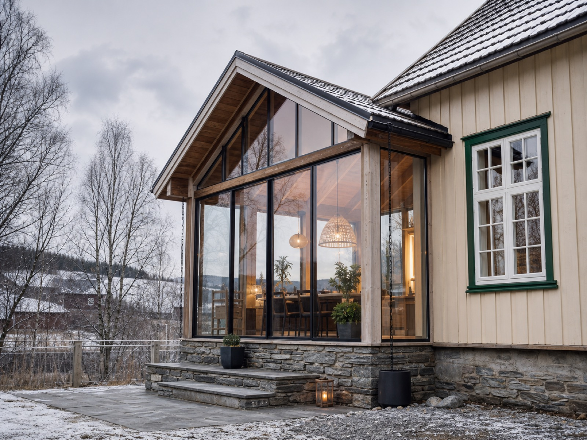

Som nytt
Totalrehabilitering med nyboligfølelse
Eldre boliger kan få nytt uttrykk, bedre energi og smartere planløsninger uten at tomten og stedets kvaliteter forsvinner.
Selbu · Tydal · Stjørdal · Trondheim
Lokal byggmester med tung fagkunnskap, eget tømrerlag og Norgeshus-systemet i ryggen. Fra ny enebolig og hytte til tilbygg, rehabilitering og næringsbygg.
Din lokale byggmester
Selboe Bygg er en erfaren tømrerbedrift med base i Selbu. De leverer alt innen nybygg, tilbygg, rehabilitering og restaurering, enten kunden planlegger bolig, hytte, garasje, leilighetsprosjekt eller næringsbygg.
Tjenester
Bredt spekter av byggetjenester for kunder som skal bygge nytt, rehabilitere eller trenger spesialkompetanse på tomt, energi eller kontroll.

Eldre boliger kan få nytt uttrykk, bedre energi og smartere planløsninger uten at tomten og stedets kvaliteter forsvinner.
Eneboliger, tomannsboliger og leilighetsprosjekter.
Skreddersydde hytter for fjell, sjø og skog.
Praktiske garasjer og effektive næringsbygg.
Støp, grunnarbeid og bygg- og anleggsoppdrag.
Tredjepartskontroller for våtrom og lufttetthet i bolig.
Enova-rådgivning og sikker utvendig asbestsanering.
Aktuelt prosjekt
Moderne rekkehus med 3 eller 4 soverom, sentralt og skjermet i Hommelvik. Prosjektet ligger i et etablert boligfelt med kort vei til dagligvare, skole, fritidstilbud, Værnes og Trondheim.


Kvalitet i praksis
Med Norgeshus i ryggen får kundene tilgang til arkitekter og ingeniører som kan tilpasse kataloghus, tegne nytt eller løse tekniske detaljer. Lokalt følger Selboe Bygg prosjektet tett og finner praktiske løsninger gjennom hele prosessen.
Daglig leder, baser, tømrere og lærling i et kompakt, lokalt team.
Bygger videre på faget og tar ansvar for neste generasjon håndverkere.
Fra gratis befaring til uforpliktende pristilbud og tydelig prosjektløp.
Team
Kontakt
Fortell kort om tomt, bolig, hytte, tilbygg eller rehabilitering. Selboe Bygg tar samtalen videre med faglig vurdering og neste steg.